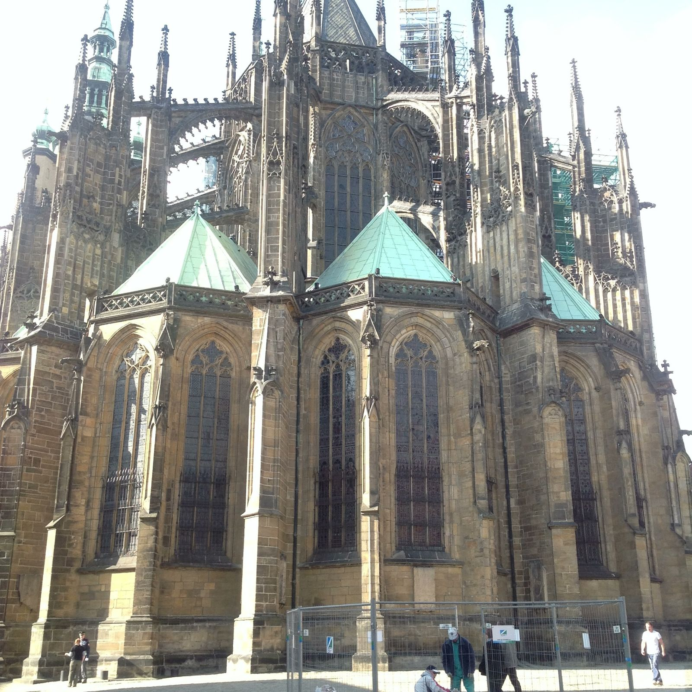

THE ARCHIVE OF ST. VITUS
城堡檔案室｜點擊任一檔案，解鎖塵封的記憶

CLASSIFIED
Subject: Gothic Vaults
Date: Spring 2024
Date: Spring 2024

TOP SECRET
Spring Music Festival
600 Years of Silence
600 Years of Silence

EVIDENCE
Old Town Bridge Tower
circa XIV Century
circa XIV Century

FIELD NOTE
Malá Strana District
Royal Road, Day 3
Royal Road, Day 3

ARCHIVE
Charles Bridge Statues
30 Witnesses
30 Witnesses

PERSONAL
Castle Hill Summit
Classified Memory
Classified Memory

SUNSET LOG
Powder Tower
Golden Hour Record
Golden Hour Record
— 點擊任一檔案，解鎖塵封的診斷報告 —